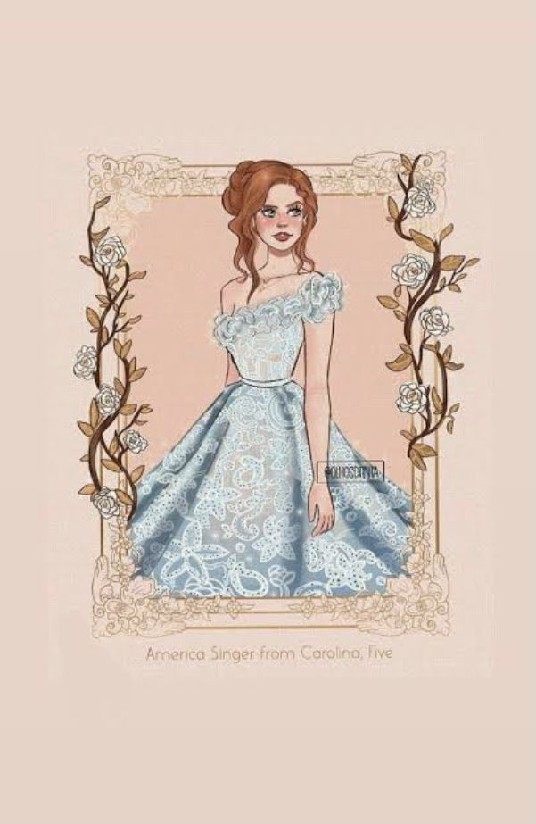
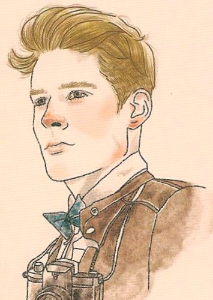
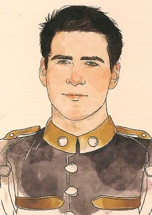
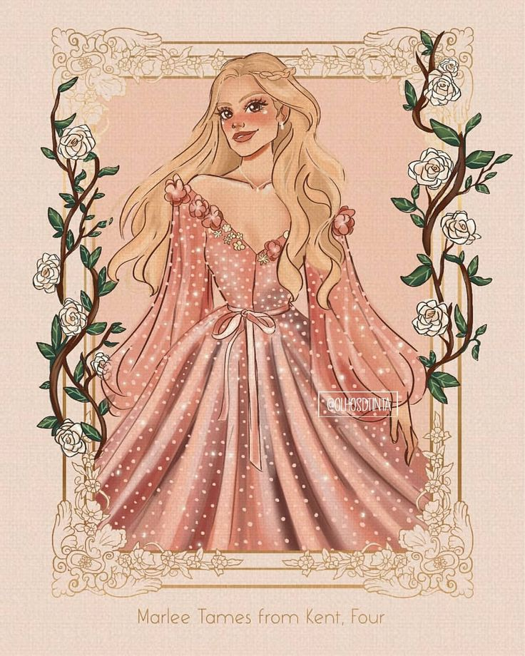
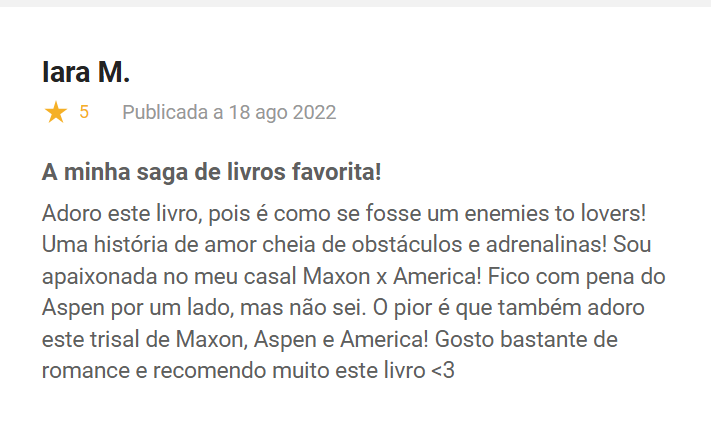
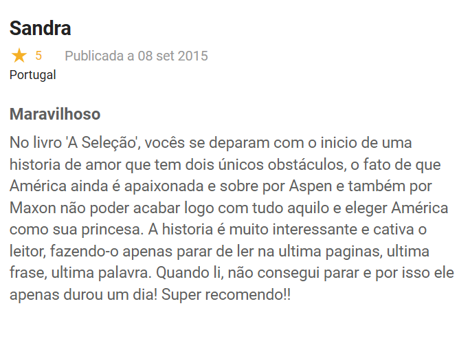

Muitas garotas sonham em ser princesas, mas este não é o caso de
America Singer. Ela topa se inscrever na Seleção só para agradar a mãe, certa de que não será sorteada para participar da competição em que o príncipe escolherá sua futura esposa. Mas é claro que depois disso sua vida nunca mais será a mesma...
Para trinta e cinco garotas, a Seleção é a chance de uma vida. É a oportunidade de ser alçada a um mundo de vestidos deslumbrantes e joias valiosas. De morar em um palácio, conquistar o coração do belo príncipe Maxon e um dia ser a rainha.
Publicado originalmente: 14 de abril de 2012
Autor: Kiera Cass
Seguido por: A Elite
Gêneros: romance, literatura juvenil, romance, ficção fantasiosa, ficção distópica
Páginas: 328 páginas
Série: A Seleção
Classificação: 12
America Singer: É a protagonista selecionada para representar sua província e competir com outras 34 garotas pela coroa e a mão do Príncipe Maxon. Ela faz parte da casta Cinco e trabalha como cantora para ajudar a família. Tem 17 anos e é ruiva de olhos azuis, Namora Aspen há dois anos, mas mantém o relacionamento em segredo, pois ele faz parte de uma casta inferior a dela. Ao participar da Seleção, começa a nutrir sentimentos por Maxon.

Maxon Schreave: Filho único do Rei Clarkson e da Rainha Amberly, sendo o Príncipe de Illéa. A Seleção acontece para que o Príncipe Maxon possa escolher sua esposa e futura rainha de Illéa. Possui cabelos cor de mel, olhos castanhos e tem 19 anos.

<
Aspen Leger: Namorado de America antes da Seleção. Pertence a casta Seis, vivendo com sua mãe e
seus seis irmãos mais novos. Tem 19 anos e é descrito tendo cabelos escuros e olhos verdes.
Ao longo do primeiro livro, Aspen vira soldado, e começa a trabalhar no
palácio onde America está hospedada.

Marlee Tames: Primeira e melhor amiga de America na Seleção. Pertence à casta Quatro
e pode ser considerada a favorita do povo por seu jeito simpático.
Possui olhos castanhos e cabelo loiro.

Avaliação 1
Avaliação 2
Avaliação 3
